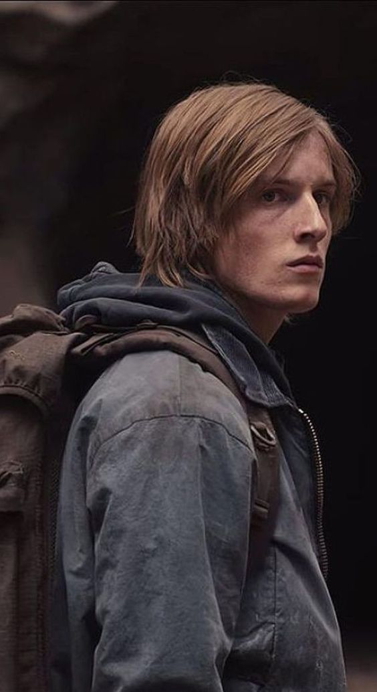
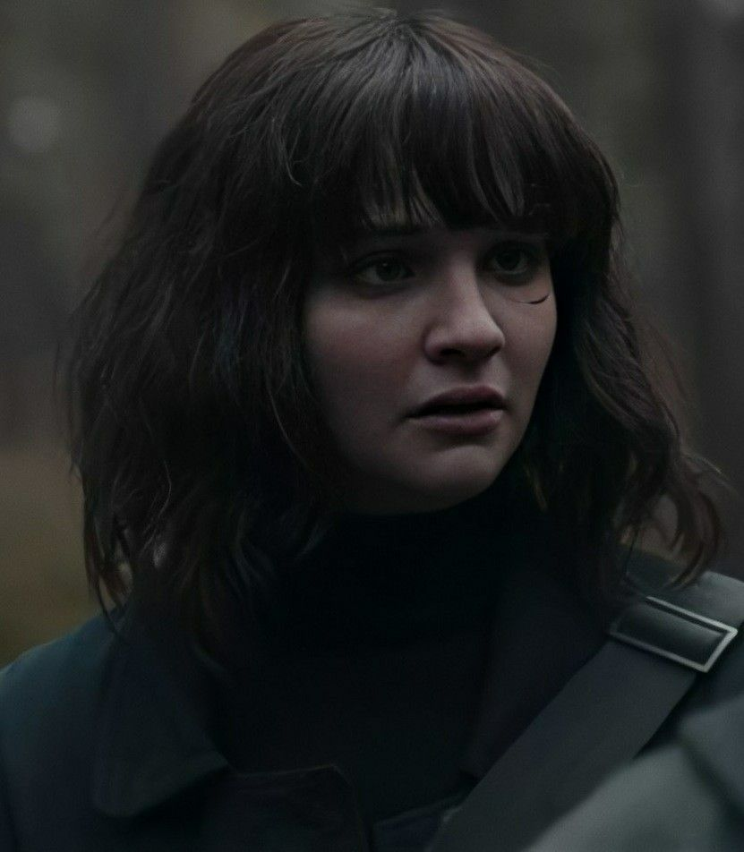
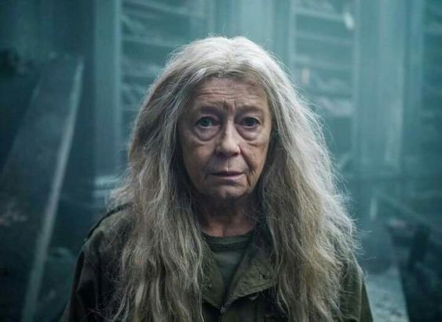
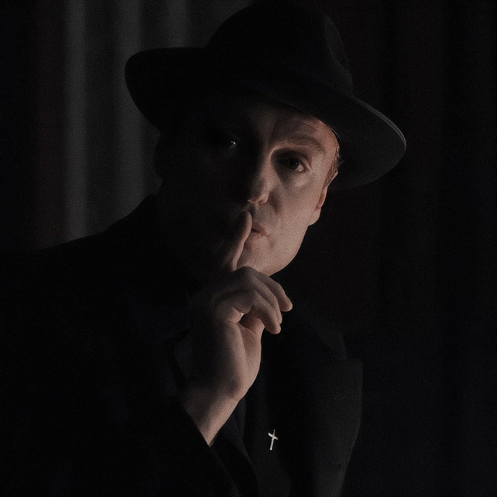

Some popular characters

Jonas Kahnwald
Jonas Kahnwald was the son of Michael and Hannah Kahnwald who traveled through time with the mission to destroy the Knot.

Martha Nielsen
Martha Nielsen was the daughter of Ulrich and Katharina Nielsen who was the love interest of Jonas Kahnwald.

Claudia Tiedemann
Claudia Tiedemann was a time traveler and the main opponent of the secret society Sic Mundus in the war for control of time travel.

Noah
Noah, also known as Hanno Tauber, was a dedicated follower of Sic Mundus. He was the son of Bartosz and Silja Tiedemann and the brother of Agnes Nielsen.